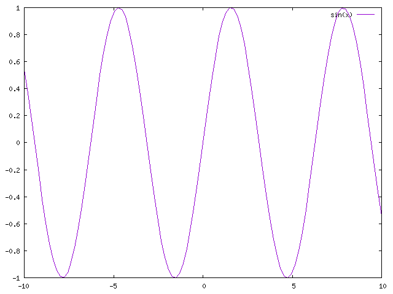
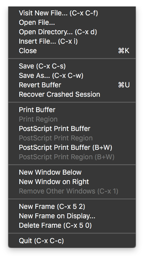
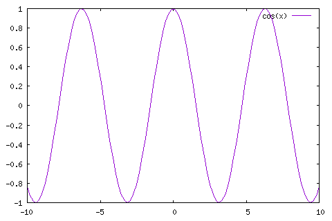

Org mode
Table of Contents
1 What is it?
- Best note taking and publishing platform
- Export supports:
- Plain HTML http://www.idryman.org/org-math/probability-01.html
- HTML in presentation mode (this slide)
- Latex
- Latex beamer
1.1 Features (1)
- Math formulas
\[ e^{i\pi} = -1 \]
- Tables
| Name | Phone | Age |
|---|---|---|
| Peter | 1234 | 17 |
| Anna | 4321 | 18 |
1.2 Features (2)
Plots
plot sin(x)

1.3 Features (3)
Diagrams (ditaa)
+--------+ +-------+ +-------+
| | --+ ditaa +--> | |
| Text | +-------+ |diagram|
|Document| |!magic!| | |
| {d}| | | | |
+---+----+ +-------+ +-------+
: ^
| Lots of work |
+-------------------------+

Need to configure ditaa.jar in org mode babel config.
1.4 Features (4)
- TODO list
- Agenda view
- Archives
- Hobby tracking
- many more..
Features (4) won't be covered today.
2 Install
- Install Emacs
- Emacs configuration (Emacs lisp)
2.1 Emacs
- OSX
brew install emacs --with-cocoa --with-imagemagick --devel --librsvg brew linkapps emacs
- Linux
sudo apt-get install emacs # ubuntu/debian sudo yum install emacs # centos
- Windows
Check online manual and download links
2.2 Emacs setup
Copy this to ~/.emacs
https://github.com/dryman/org-mode-slide/blob/master/.emacs
Then execute emacs and it should be all set
3 Emacs basics
- GUI version and command line version
- emacs –no-window-system
- emacs -nw
- Most common features are in toolbar and menu bar
3.1 Keys
C-ControlM-Meta (option) or EscS-Shifts-Super (apple/command/windows key)
3.2 View commands in menu

- Or search for emacs cheatsheet on google.
- Not necessary to memorize these shortcuts.
3.3 Enter org mode
- Create a notes directory at home
mkdir -p ~/notes/img
- Menu -> File -> Visit new file (C-x C-f)
- Select
~/notes/index.org
You can change the directory setup in .emacs file.
4 Org mode syntax
4.1 Document header
At the begining of the doc:
#+TITLE: Docuemnt title #+AUTHOR: Your name #+EMAIL: bla@example.com #+DESCRIPTION: simple example #+KEYWORDS: org-mode, syntax #+LANGUAGE: en
4.2 Document structure
* heading 1 (chapter in latex) New chapter. ** heading 2 (section) Paragraph in new section *** heading 3 (subsection) Paragraph in new sub-section **** heading 4 (subsubsection) Paragraph in new sub-sub-section
4.3 Formatting text
/Emphasize/ (italics) *strongly* (bold) */very strongly/* (bold italics) ~inline code~ =verbatim text= +deleted text+ superscript subscript
4.4 Lists
- Item with some lengthy text wrapping hopefully across several lines. We add
a few words to really show the line wrapping.
- Bullet.
+ Bullet.
* Bullet.
1. Arabic (decimal) numbered list item. We add a few words to show the line
wrapping.
A. Upper case alpha (letter) numbered list item.
a. Lower alpha.
b. Lower alpha.
B. Upper alpha.
2. Number.
4.5 Tables
#+CAPTION: Table with an header row | Name of column 1 | Name of column 2 | Name of column 3 | |------------------+------------------+------------------| | Top left | Top middle | | | | | Right | | Bottom left | Bottom middle | |
{kind=link}
5 advanced syntax
5.1 Math formulas
- Greek characters: α β
\alpha \beta
- Inline math: ∑n=110 n2
5.2 Latex formatted math
\begin{equation}
x=\sqrt{b}
\end{equation}
If $a2=b$ and \( b=2 \), then the solution must be
either $$ a=+\sqrt{2} $$ or \[ a=-\sqrt{2} \].
\begin{equation} x=\sqrt{b} \end{equation}
If \(a^2=b\) and \( b=2 \), then the solution must be either \[ a=+\sqrt{2} \] or \[ a=-\sqrt{2} \].
5.3 plots
See source code for how it is done. The export system cannot read the syntax.
plot cos(x)

6 Export
- M-x org-publish<RET>notes<RET>
- Output file would be in
~/notes/public_html - Open the output and see how it looks
6.1 Publish
- school website: upload the exported index.html to hosting directory
- I don't recommand to use emacs remotely
- Installing latest emacs is hard, and too many commands to memorize
- github pages (need to learn git)
6.2 Github pages
Assuming github account and online repository is setup
cd public_html git init git checkout gh-pages git add . git commit -m 'creating gh-pages' git remote add origin git@github.com:user/repo.git git push origin gh-pages